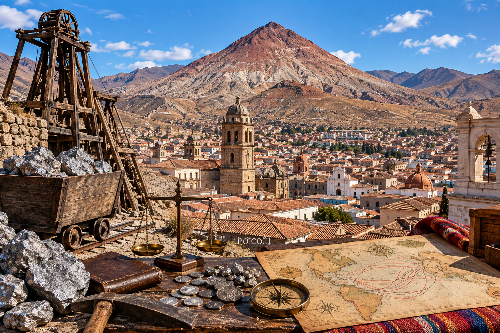
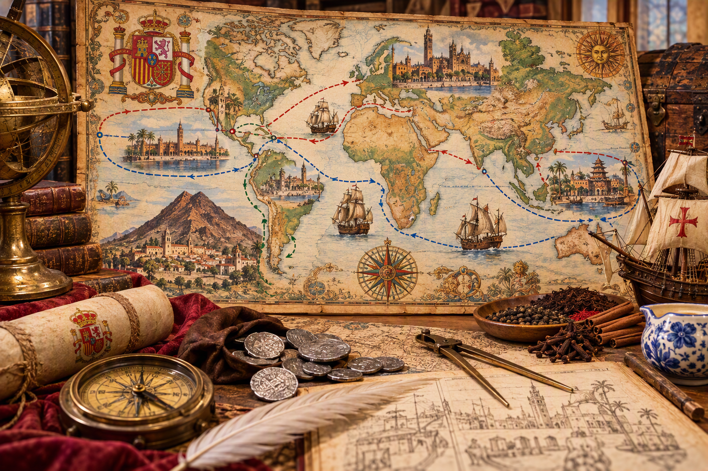
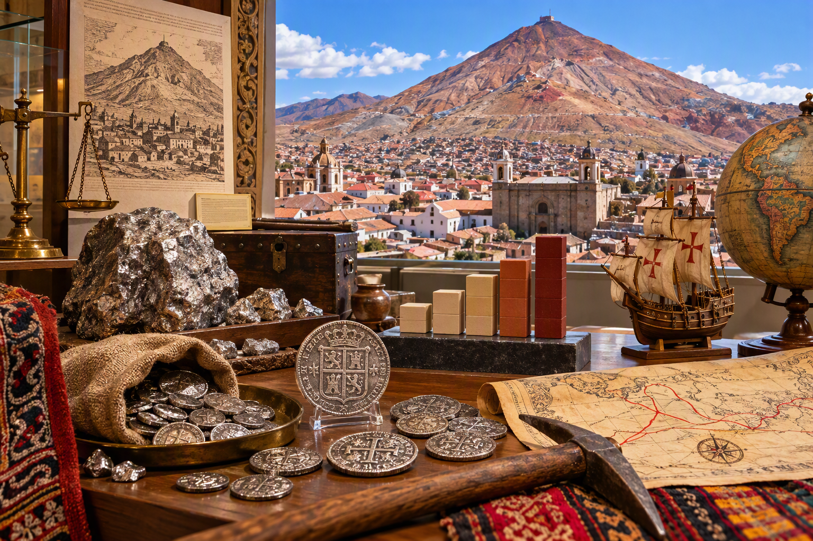
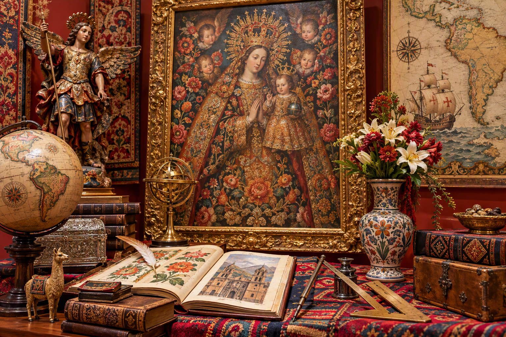
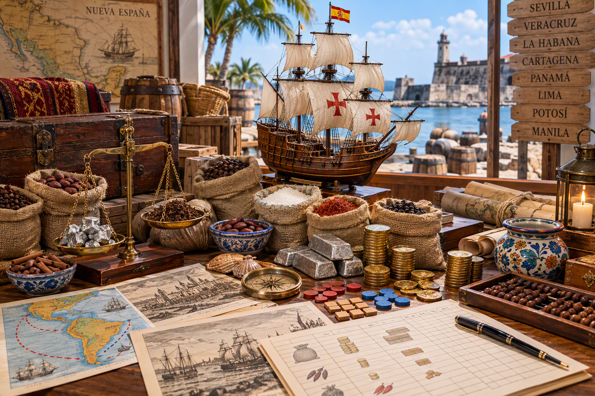
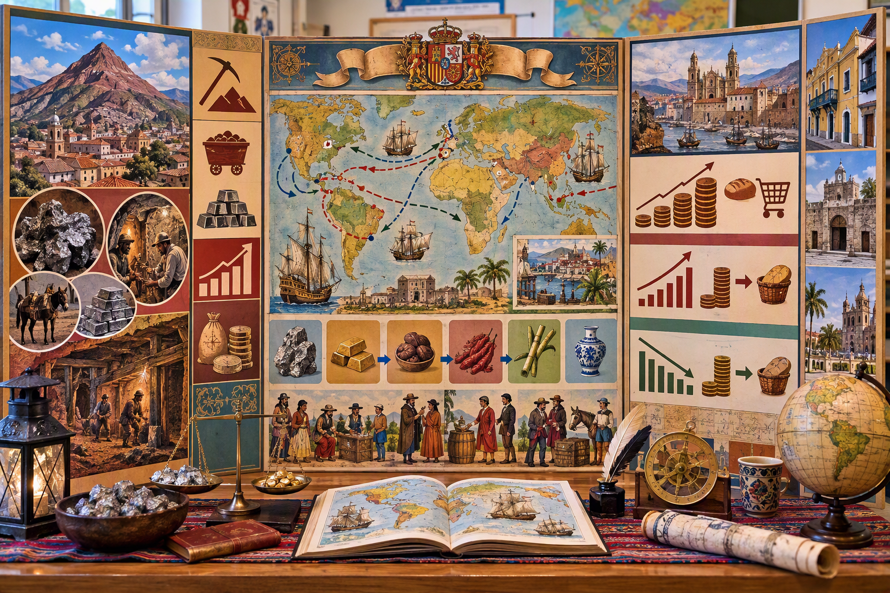

Seconde — Módulo 3 — Imperio español, comercio global y matemáticas aplicadas
Galeones · rutas comerciales · Potosí · arte colonial · simulación en Veracruz · infografía final
DNL Matemáticas en español · 5 sesiones · 5 horas

Visión general
Este módulo estudia el comercio global del Imperio español en los siglos XVI y XVII desde una perspectiva matemática, histórica y ciudadana. El alumnado analiza rutas transatlánticas, circulación de metales preciosos, producción minera, inflación, arte colonial y decisiones comerciales mediante cálculos, lectura de datos y argumentación en español.
Pregunta guía: ¿Cómo utilizar las matemáticas para representar las rutas comerciales del Imperio español, medir intercambios, debatir beneficios y desigualdades, y construir un mensaje histórico matizado en español?
Las cinco sesiones
1
Sesión 1 — Representar una red comercial mundial
60 minutos
Objetivo lingüístico: Describir un itinerario y comparar dos rutas en español.
Pregunta inicial: ¿Cómo se organizaban intercambios a escala atlántica y pacífica en los siglos XVI y XVII? La observación de mapas permite situar la Casa de la Contratación de Sevilla, fundada en 1503, las flotas atlánticas y, como apertura, la conexión Manila-Acapulco. La unión dinástica con Portugal desde 1580 amplió temporalmente los territorios gobernados por los Habsburgo de España.
Pregunta de investigación: ¿Cómo comparar dos rutas sin reducir la decisión a la distancia? El alumnado tiene en cuenta duración estimada, escalas, coste, riesgo simulado y fiabilidad de los datos.
Criterio observable: Calculo una distancia o una duración con unidades correctas y formulo un límite del modelo.
Evidencia para la producción final: Mapa anotado, cálculo comprobado y frase comparativa en español.
Desarrollo detallado
Localizar en un mapa Sevilla, Veracruz, La Habana, Panamá, Lima, Acapulco y Manila.
Construir dos itinerarios como sucesiones ordenadas de nodos y distinguir distancia cartográfica y ruta histórica.
Estimar una distancia con la escala y calcular una duración con velocidad media y escalas declaradas.
Comparar los itinerarios mediante al menos cuatro criterios: distancia, duración, coste simulado, riesgo y fiabilidad de los datos.
Presentar una decisión condicional y un límite del modelo.
Producción esperada: Mapa anotado, dos cálculos comprobables, comparación multicriterio y frase de límite.

Recurso visual en español: identifica nodos, escalas y rutas; después compara distancia, duración, coste, riesgo y fiabilidad de los datos.Vídeo en español: Rutas comerciales de España: una red económica mundial
Sesión 2 — Seguir una cantidad de plata y debatir su distribución
60 minutos
Objetivo lingüístico: Explicar un cálculo de tasa y matizar su interpretación.
Situación de partida: ¿Sabíais que Potosí llegó a ser uno de los centros mineros y urbanos más importantes del mundo colonial? Proyección de una imagen del Cerro Rico (Bolivia, a más de 4 000 m de altitud).
El descubrimiento de importantes vetas de plata en 1545 transformó la economía colonial y conectó América, Europa y Asia mediante circuitos de plata. La expresión «vale un Potosí» se asocia a una riqueza excepcional.
El Cerro Rico fue una de las principales fuentes de plata del mundo durante los siglos XVI y XVII; las estimaciones varían según las fuentes y los períodos estudiados.
Sistema de mita: trabajo forzado de poblaciones indígenas en condiciones muy duras. Contexto de circulación de riqueza:
Potosí → Lima → Panamá → Sevilla (red transatlántica monopolizada).
Criterio observable: Distingo aumento porcentual, multiplicación y evolución del poder adquisitivo.
Evidencia para la producción final: Gráfico o tabla anotada con dos cálculos y una interpretación prudente.
Desarrollo detallado
Identificar el periodo, la unidad y la fuente de cada dato sobre producción o precios.
Calcular variación absoluta, coeficiente multiplicador y tasa de variación con valor inicial distinto de cero.
Comparar la evolución de un precio y un salario mediante un índice base 100 o una razón de poder adquisitivo.
Representar los resultados con una tabla o un gráfico adecuado, sin extrapolaciones injustificadas.
Relacionar la interpretación económica con las condiciones de la mita y distinguir cálculo, dato y valoración histórica.
Producción esperada: Tabla o gráfico con datos documentados, tres cálculos distintos e interpretación prudente.

Recurso visual en español: distingue cantidad inicial, variación absoluta, porcentaje, coeficiente multiplicador y poder adquisitivo.Vídeo original en español: explica la explotación del Cerro Rico, la circulación de la plata y su papel en la economía del Imperio español y del comercio mundial. Contrasta el contexto histórico con los cálculos de variación, porcentaje y coeficiente multiplicador de la actividad.
Sesión 3 — Medir la circulación de formas, materiales y modelos artísticos
60 minutos
Objetivo lingüístico: Describir una obra y distinguir medida observada, hipótesis e interpretación.
Situación de observación: "¿Qué influencias observáis en esta obra?" Observación de obras de la Escuela de Cuzco (siglos XVI y XVIII).
Contexto: artistas indígenas, mestizos y criollos dialogaron con modelos europeos. Sincretismo cultural: iconografía cristiana reinterpretada mediante sensibilidades andinas
(mestizaje visual, apropiaciones y nuevas formas de representación).
Exploración de razones: el alumnado mide varias razones de longitudes y las compara con distintos valores de referencia. Una proximidad a φ ≈ 1,618 es una observación, no la prueba de una elección consciente del artista.
Criterio observable: Presento una medida reproducible y no deduzco una intención artística sin una fuente.
Evidencia para la producción final: Croquis o reproducción anotada con razón calculada y comentario en español.
Desarrollo detallado
Identificar con precisión la obra, su lugar de conservación, su datación aproximada y la calidad de la reproducción.
Elegir dos longitudes visibles, definir sus extremos y efectuar varias mediciones coherentes.
Calcular la razón en un orden declarado y estimar la incertidumbre debida a la reproducción.
Comparar el resultado con un valor de referencia sin convertir una proximidad numérica en prueba de intención.
Presentar observación, cálculo, hipótesis y límite historiográfico.
Producción esperada: Reproducción anotada, protocolo de medida, razón calculada, incertidumbre y comentario.

Recurso visual en español: realiza una medida reproducible y separa observación, hipótesis matemática e interpretación histórica.Vídeo en español: El arte de la Escuela Cuzqueña
Sesión 4 — Decidir en una simulación comercial en Veracruz
60 minutos
Objetivo lingüístico: Justificar una decisión, expresar un riesgo y formular un límite del escenario.
Situación de simulación: A partir de un escenario ficticio situado en el puerto de Veracruz hacia 1650, cada equipo representa una casa comercial con un capital inicial de 10 000 pesos. El objetivo es tomar una decisión argumentada, calcular un beneficio neto y explicar los límites del escenario.
Criterio observable: Calculo un beneficio neto coherente y justifico una decisión sin confundir simulación y hecho histórico.
Evidencia para la producción final: Hoja de estrategia con cálculos, decisión y argumento oral.
Desarrollo detallado
Leer todas las reglas y distinguir datos ficticios y hechos históricos.
Preparar un presupuesto que respete el capital, con cantidades enteras o una convención de redondeo explícita.
Calcular coste de compra, transporte, ingresos, beneficio bruto y beneficio neto según las definiciones indicadas.
Comparar una estrategia concentrada y otra diversificada en al menos dos escenarios de precio o riesgo.
Justificar la decisión y explicar qué aspectos no representa la simulación.
Producción esperada: Hoja de estrategia con presupuesto, costes, ingresos, beneficio neto, escenarios y límite.

Recurso visual en español: registra capital, coste de compra, transporte, ingresos y beneficio neto; recuerda que el escenario es una simulación.Vídeo en español: El comercio en el Virreinato de Nueva España
Sesión 5 — Construir una infografía económica e histórica argumentada
60 minutos
Objetivo lingüístico: Presentar un dato, indicar su naturaleza y responder a una pregunta.
Síntesis visual: "¿Cómo resumir la economía imperial en una imagen?" Proyección infografías profesionales
(revistas de divulgación científica e histórica). Pregunta creativa: ¿Qué información del módulo merece una visualización clara?
¿Cómo hacer comprensible lo complejo?
Fase 1 — datos (quince minutos): selección de 3 a 5 datos significativos de las sesiones anteriores.
Rutas comerciales (15 conexiones principales, distancias, tiempos). Potosí (evolución producción 1545-1700).
Distribución de la riqueza (Corona 20%, propietarios de minas 30%, Iglesia 10%, trabajadores 40%).
Inflación en Europa (trigo +300%, salarios +100%). Búsqueda complementaria de datos faltantes, con verificación de la fuente.
Criterio observable: Cada número es legible y verificable, con unidad, estatus o fuente.
Evidencia para la producción final: Infografía final y guion oral breve con un límite del modelo.
Desarrollo detallado
Elegir de tres a cinco datos comprobados y registrar para cada uno fuente, fecha, unidad y estatus.
Asociar cada pregunta al soporte adecuado: mapa para una red, línea para evolución, barras para comparación y sectores solo para un total.
Recalcular porcentajes y comprobar totales, escalas, leyendas y coherencia temporal.
Construir una jerarquía visual con título informativo, mensaje principal y anotaciones breves.
Presentar la infografía, responder a una pregunta e indicar un límite de los datos o del modelo.
Producción esperada: Infografía documentada con mapa o red, gráfico, dos cálculos, interpretación, consecuencia y límite.

Recurso visual en español: cada dato debe presentar unidad, periodo, fuente y estatus; el gráfico elegido debe responder a una pregunta.Vídeo en español: Cómo crear infografías matemáticas profesionales